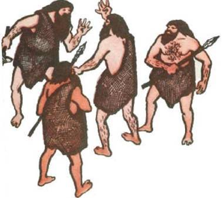

Связь и коммуникация между людьми были важными аспектами жизни нашего общества с самых ранних времен. Сначала люди использовали простые формы связи, такие как голос, жесты и дымовые сигналы. Однако с течением времени развитие технологий коммуникации привело к появлению более эффективных и удобных способов передачи информации. В этой статье мы рассмотрим историю развития технологий коммуникации, начиная от почты и заканчивая Интернетом.

Почта. Первые формы почтовой связи были известны еще в Древнем Египте и Древнем Риме. Однако почтовая система, как мы ее знаем сегодня, возникла только в 15 веке в Европе. На протяжении следующих столетий почта развивалась, и в конце 19 века стала более организованной и эффективной. В этот период почтовые службы стали предоставлять услуги доставки почты не только в пределах государств, но и между ними.
Телеграф. В 1837 году была изобретена телеграфная система, которая позволяла передавать сообщения на расстояние. Телеграф был первым электронным средством коммуникации и революционизировал связь между людьми. Эта технология стала широко использоваться в течение следующих десятилетий и оставалась популярной до начала 20 века.
Телефон. В 1876 году Александр Белл изобрел телефон, который стал следующим значимым шагом в истории коммуникации. Телефон позволял людям общаться по телефонной линии и быстро стал очень популярным. В течение следующих десятилетий телефония развивалась, и в 20 веке появились многие другие технологии, такие как радио и телевидение, которые существенно расширили возможности связи и коммуникации между людьми.
Компьютеры и Интернет. В 20 веке развитие компьютерной технологии стало новейшим шагом в истории коммуникации. Компьютеры позволили создавать электронные сообщения и обеспечили новый способ обмена информацией между людьми. В 1960-х годах появились первые сети компьютеров, которые позволяли подключать компьютеры к удаленным серверам и передавать информацию через сеть.
Однако настоящей революцией в коммуникации стало появление Интернета в 1990-х годах. Интернет представляет собой глобальную сеть компьютеров, которая позволяет обмениваться информацией и коммуницировать между людьми по всему миру. Интернет изменил нашу жизнь и стал неотъемлемой частью нашей повседневной коммуникации. Сегодня существует множество различных технологий коммуникации, таких как социальные сети, мессенджеры, видеозвонки и т.д. Эти технологии позволяют нам быстро и эффективно общаться и обмениваться информацией в режиме реального времени. Однако, как и в прошлом, связь между людьми все еще остается важным аспектом нашей жизни. История развития технологий коммуникации показывает, что люди всегда искали новые и более эффективные способы общения и передачи информации. С развитием технологий, наши возможности для коммуникации и обмена информацией существенно расширились. Однако, несмотря на все эти новшества, важно помнить, что связь между людьми остается ключевым аспектом нашей жизни, и никакие технологии не заменят личное общение и эмоциональную близость, которые мы можем испытывать только в прямом контакте с другими людьми.